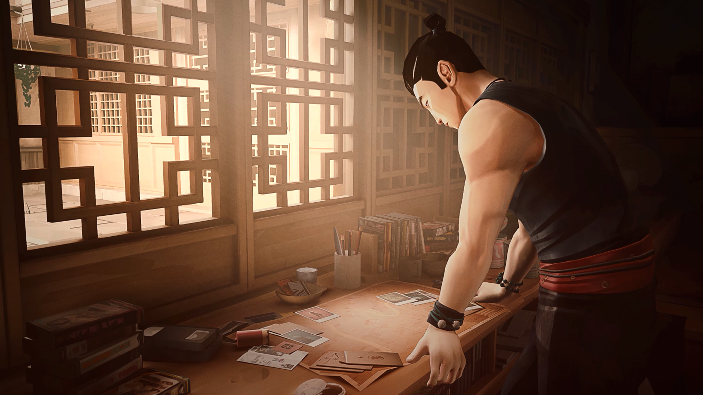

Basic Systems
There are several important concepts to be aware of as you play. This section discusses the systems you’ll need to understand to survive.
Health System
It is inevitable that you will be taking hits to your health, but unlike other games, Sifu has no consumables present to help you recover lost health. Instead, the game does this a couple of ways; firstly, by interacting with shrines as this would heal you up completely, and secondly by rewarding you with health for each takedown. The amount healed through takedowns can be increased through the skill tree.
Pendant
Death in the game is tracked through the character’s age shown in the upper left side of the screen, each death increases the age count equal to your total death count. It is worth noting that the death count goes down by one for each sub-boss that you manage to take down.
Structure
Enemy attacks may be blocked, deflected or avoided; attacks that are deflected will increase your structure by a smaller amount relative to blocked attacks while avoiding attacks regains your structure instead. As your structure gradually reaches its threshold, any attack blocked that would take the gauge up to the threshold will break through your guard and will be treated as if you haven’t blocked in the first place. It is worth noting that deflecting attacks while at the structure gauge threshold will prevent it from going any further. You would know than an attack has been deflected if there are white "petal" effects after each hit.
Special Attacks
Certain attacks from the enemies will have an orange glow to them accompanied by a distinct sound effect. These are attacks that would greatly increase your structure gauge thus these are attacks that you should be paying really close attention to.
XP and Skills
Taking down enemies will award you with XP that you can use either when you arrive to a shrine or when you die. This can be used to unlock move sets, focus attacks, and perks that can help you throughout the course of the game. Investing more XP into move sets and focus attacks will eventually make them permanently unlocked.
Shrine
Shrines are scattered around in the game at fixed locations, interacting with one will fully regenerate your health and will give you access to several unlocks. Note that the available unlocks relate to three different factors: Current Age, Current Level Score, and Current XP Total.
Game Over
As the deaths you have accumulated gradually increase your age, the game limits the number of deaths by capping it when you reach 70 years old. When you die with at least an age of 70, you will no longer respawn. No need to worry as you will be given the option to restart the location; this will reset your age, death counter, and learned skills and perks to what it was prior to choosing the location.
General Gameplay Tips
Now that you know about the basic systems that make up the game, there are numerous general tips that could help with your gameplay.
Enemy Structure
Much like you, the enemies have a structure gauge. Pay close attention to their structure gauges and see which are close to breaking.
Block
Holding down the guard button will allow for you to block an attack and negate any unarmed damage while greatly decreasing any weapon damage. The structure gauge does increase significantly more relative to a deflect or parry.
Deflect/Parry
Pressing the guard button right before an attack is about to land will deflect the attack, this lets you avoid any damage while only slightly increasing your structure gauge as well as greatly increasing the enemy’s structure gauge. Doing the same to certain attacks in an enemy’s attack string would result in a parry where the aforementioned effects of a deflect applies on top of stunning an enemy, leaving them open for you to deal damage back to them.
Avoid
Holding down the guard button and inputting an Up, Left, or Right directional input will result in a duck/high avoid while inputting a Down directional input will result in a hop/low avoid. This completely negates any damage or increase in structure and will help to regain your structure. Avoiding the last hit in an enemy’s attack string will slow down time for a brief moment leaving them open to any form of retaliation.
Deflect/Parrying vs Blocking vs Avoiding
Being able to choose between these three main defensive tools is vital in your gameplay as these open the enemies up to attacks of your own. Despite blocking having several downsides that the other defensive options lack, this does not mean that this should be completely avoided especially as you are growing accustomed to the combat of the game. Blocking can help when you don’t have the time to react, giving you a small window to assess the attacks being thrown at you so you can react accordingly before your structure gauge breaks.
Generally, once you have grown familiar with the attack patterns of the enemies, deflecting and parrying tends to be easier and rewarding as the enemy’s structure gauge rises while avoiding leaves them open to your attacks. It is worth noting that several attack strings may end with a special attack that is a 50/50 between a high or low attack, in this instance it is generally safer to learn the timings of these attacks as they are both the same instead of having to react.
Crowd Management
Enemies will attempt to crowd around you to overwhelm you with attacks. Be aware that regardless of the amount of people around you, at any given time only two will actively attack you at any given while the others watch on, although the enemies chosen to attack you can change over time making it feel as if there are multiple attacking you at once. Being able to manage these waves of enemies are important and can be done through the following:
Knockdowns
The simplest way is to knock enemies down either through command attacks, certain attack strings, or certain throwable items. Throwing or pushing an enemy into one that is already knocked down could be knocked down as well. They stay on the ground for a while, giving you time to deal with everyone else in the room.
Dizzy/Stunned Statuses
Attacking enemies can put them in a dizzy state, stopping them from performing any actions for a short while. When the enemy has been damaged enough, then certain actions can instead stun an enemy leaving them immobile for longer; this can be achieved through certain skills, having another enemy thrown at them, or when interrupting an attack; an interrupted attack would generally keep them immobile for longer.
Environmental Hazards
Using the environment to your advantage such as throwing an enemy into a wall or down a flight of stairs greatly increases their structure gauge or even throwing them off ledges would take them out from the fight entirely. Be aware that environmental hazards apply to you too.
Weapon Usage
The use of a weapon greatly increases your damage output and can break through an enemy’s guard. When blocking, this also negates any chip damage taken from armed attacks.
Throwing Weapons/Items
You can use a weapon to create space for you to maneuver to a better position or open up an enemy’s guard.